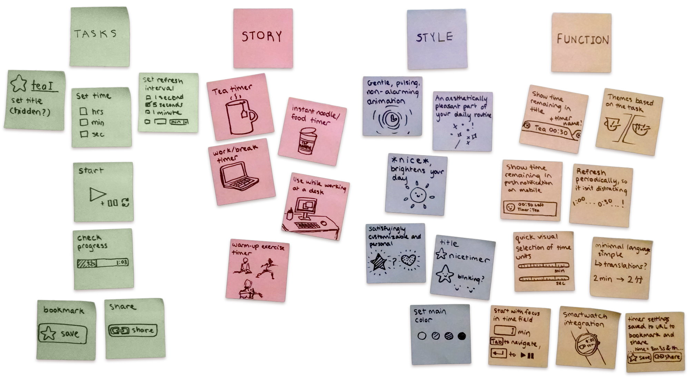
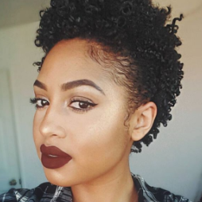
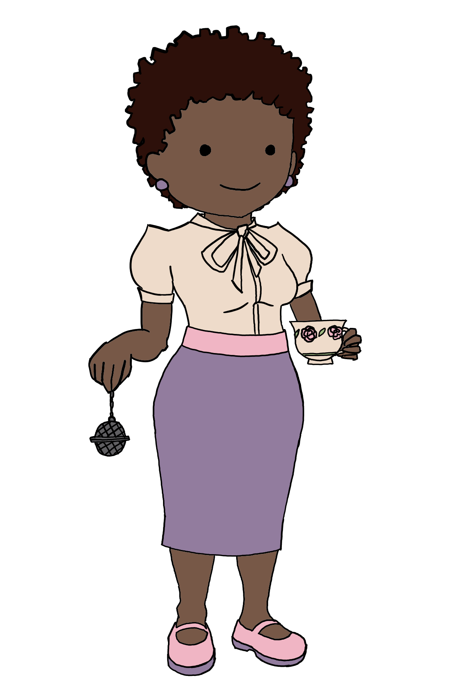
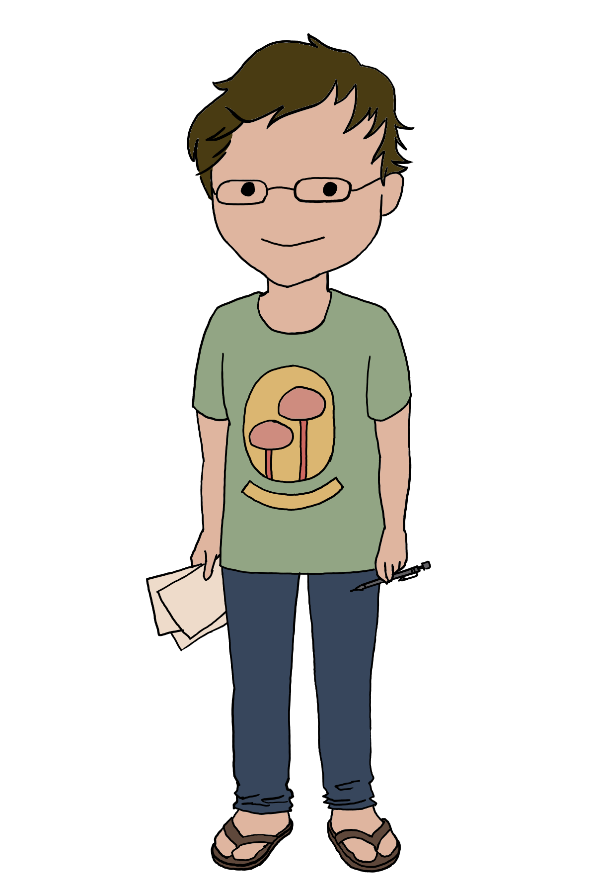
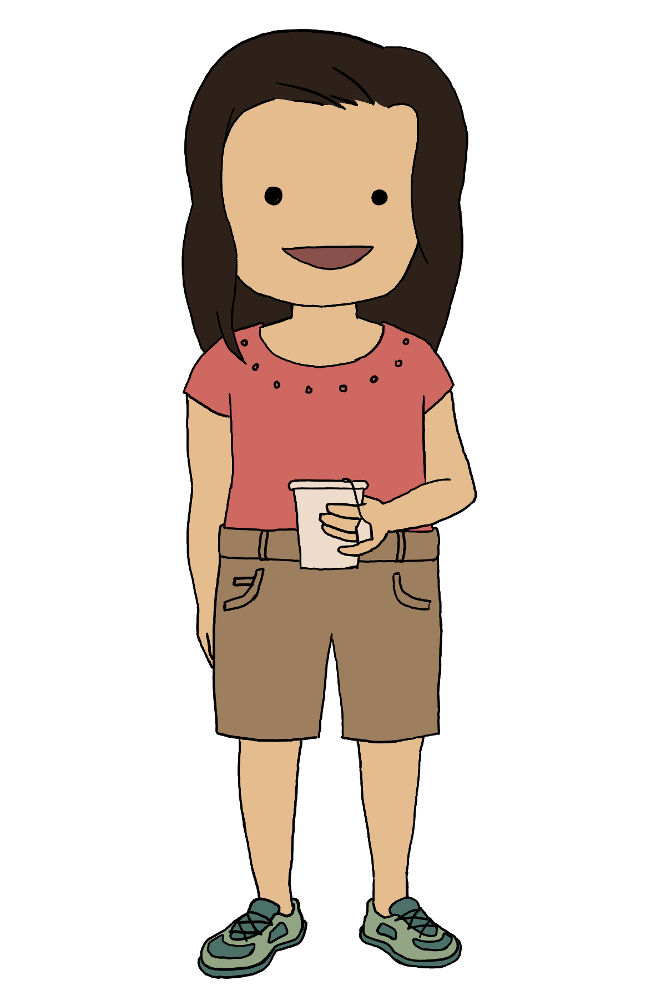
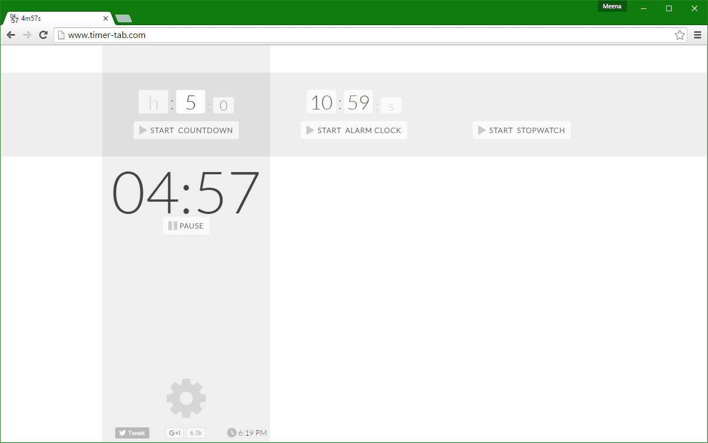
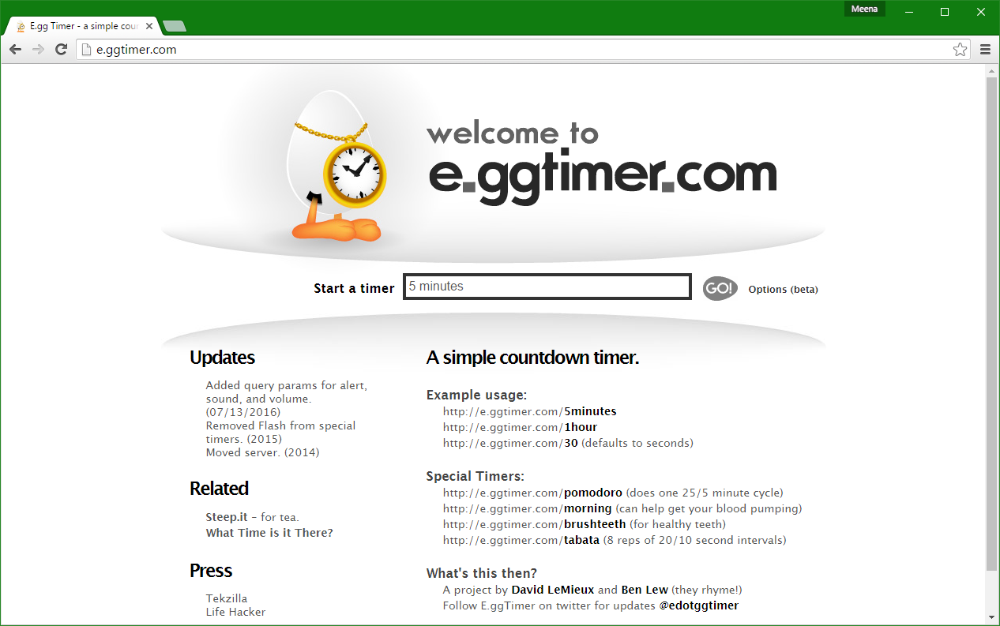
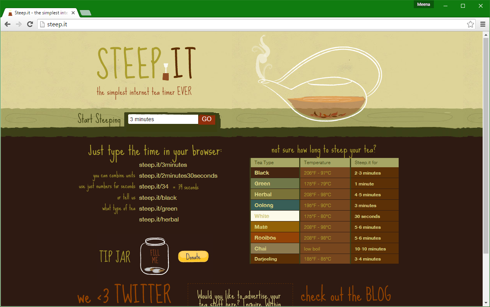

Nicetimer is an online timer that I designed because:
- I wanted to try putting together a visual style emphasizing warmth and cleanliness
- I wanted a pleasant timer to use when making tea
- I wanted to share my design process with potential clients and employers 😉
Brainstorming
I started off by putting together a collection of any and all thoughts I had about this project. I kept adding to it throughout the project as I had new ideas.
User Personas
made user personas wooo
Brianna Carter
 
- 25 year old woman
- HR associate in Seattle
- Lives with two roommates
Personal
- Organized to a fault at work, spontaneous elsewhere
- Loves vintage and alternative fashion
- Maintains a collection of loose leaf tea at her desk
Goals
- Always looking for ways to add extra pizzazz
- Taking a basic graphic design class
Frustrations
- When people in her workplace are messy
Tech
- iMac at work, Windows laptop and iPhone 5s with matching skins for personal use
Mark Harris

- 20 year old man
- University student majoring in chemical engineering
- Tutor
Personal
- Friendly and welcoming but slightly forgetful
- Reads comics and watches cartoons in spare time, prefers lighthearted stories
- Strictly times study sessions and breaks to stay focused
Goals
- Develop a good work ethic while in school
- Spend more time at social activities
Frustrations
- Mismanaging time and having to stay up late to finish assignments
Tech
- Macbook Pro and Nexus smartphone
Carol Tan

- 43 year old woman
- Administrative assistant at an Indiana middle school
- Mother of two
Personal
- Loud and cheerful
- Starting to grow vegetables
- Recently diagnosed with prediabetes
Goals
- Be a healthy role model for her kids
- Cutting back on coffee and switching to tea
Frustrations
- When healthier food is blander
Tech
- Windows desktop at work and personal iPhone
Benchmarking
did some things
timer-tab.com
- Clean colors and style
- Status shown in page title
e.ggtimer.com
- Save timers with URL
- Built in common timers
steep.it
- Select a specific tea
- Targeted visual style
Storyboarding
I put together a storyboard to illustrate Nicetimer's use case - tea. It helped me stay focused and in context.
Wireframing
I sketched out some controls for the specific tasks of a timer, plus some overall layouts.


Then, I put together some wireframes of the entire timer.


After evaluating these using the personas I created, I put together a rough interactive prototype to test with, changing it to respond to feedback.
User Testing
I put together an outline for user testing, rounded up some friends (since it was a personal project), and started testing. The test outline starts off with some background questions, and progresses to trying out tasks on the interactive prototype.
I like to use web forms as outlines for user tests and interviews, so that I can type my notes while keeping my eyes and attention on the user.
Visual Style
I collected reference for the aesthetic I wanted for the timer in a moodboard.
Then, I put together a style guide. I wanted the timer to be customizeable, so I included five color palettes.

High-Fidelity
Synthesizing the style, layout, and tester feedback, I created a final high-fidelity prototype. (Open in new tab)
Metrics
Along with high-fidelity mockups, I put together a list of key metrics to monitor the timer's performance.
- Times the timer is set for
- Do the times set match the intended use case, or is the timer useful for other things?
- Dates and times the timer is used
- Is the timer used during the workday, or at other times?
- Frequency of use by individuals
- Do people try it once and leave, use it once in a while, or use it on a daily basis?
- Times the timer is set for
- Do the times set match the intended use case, or is the timer useful for other things?
- Dates and times the timer is used
- Is the timer used during the workday, or at other times?
- Frequency of use by individuals
- Do people try it once and leave, use it once in a while, or use it on a daily basis?
So there it is! That's my design process - if you'd like to hire me, I can do any or all of the above UI/UX design tasks for your company.